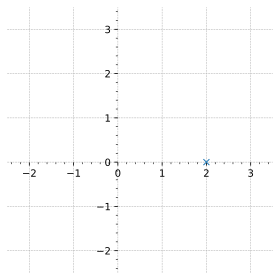
Robótica
Clase 07
Semana 8 - 05/05/2026
Notación
Punto: \(\require{color} \textcolor{PineGreen}{d}_{\small \textrm{2D}} = \begin{pmatrix} \textcolor{Orange}{a} \\ \textcolor{RedViolet}{b} \end{pmatrix}\)
Vector: \(\require{color} \textcolor{LimeGreen}{\boldsymbol{\vec{p}}}_\textcolor{PineGreen}{d} = \textcolor{Orange}{a} \boldsymbol{\vec{i}} + \textcolor{RedViolet}{b} \boldsymbol{\vec{j}}\)
\[ \textcolor{LimeGreen}{\boldsymbol{\vec{p}}}_\textcolor{PineGreen}{d} = \begin{bmatrix} \textcolor{Orange}{a} \\ \textcolor{RedViolet}{b} \end{bmatrix} \]
Los vectores y matrices serán distinguidos en negrita
Notación
Punto: \(\require{color} \textcolor{PineGreen}{d}_{\small \textrm{2D}} = \begin{pmatrix} \textcolor{Orange}{a} \\ \textcolor{RedViolet}{b} \end{pmatrix} \;\)
Coordenadas del vector respecto del marco de referencia \(\textcolor{Blue}{A}\): \[\require{color} {}^{\textcolor{Blue}{A}}{\boldsymbol{\textcolor{LimeGreen}{p}}_\textcolor{PineGreen}{d}} = \textcolor{Orange}{a} \textcolor{Blue}{\boldsymbol{\vec{i}}} + \textcolor{RedViolet}{b} \textcolor{Blue}{\boldsymbol{\vec{j}}}\]
Notación
- Un vector tiene una representación por cada marco de referencia
- Todas “apuntan” al mismo punto \(\textcolor{PineGreen}{d}\):
\[\require{color} {}^{\textcolor{Blue}{A}}{\boldsymbol{\textcolor{LimeGreen}{p}}} \equiv \require{color} {}^{\textcolor{Orange}{B}}{\boldsymbol{\textcolor{LimeGreen}{p}}} \equiv \require{color} {}^{\textcolor{Gray}{C}}{\boldsymbol{\textcolor{LimeGreen}{p}}} \equiv \require{color} {}^{\textcolor{Maroon}{D}}{\boldsymbol{\textcolor{LimeGreen}{p}}}\]
- Las componentes pueden ser distintas
\[ {\small \textcolor{Blue}{\sideset{^{A}}{}{\begin{bmatrix} \textcolor{black}{2.1} \\ \textcolor{black}{1.0} \end{bmatrix}}} \equiv \textcolor{Orange}{\sideset{^{B}}{}{\begin{bmatrix} \textcolor{black}{-1.7} \\ \textcolor{black}{0.6} \end{bmatrix}}} \equiv \textcolor{Gray}{\sideset{^{C}}{}{\begin{bmatrix} \textcolor{black}{1.5} \\ \textcolor{black}{0.6} \end{bmatrix}}} \equiv \textcolor{Maroon}{\sideset{^{D}}{}{\begin{bmatrix} \textcolor{black}{-1.5} \\ \textcolor{black}{1.0} \end{bmatrix}}} } \]
Transformaciones lineales
Para un vector \(\boldsymbol{p} \in \mathbb{R}^{n}\), son funciones de la forma:
\[ f(\boldsymbol{p}) = \boldsymbol{T} ~\boldsymbol{p} \]
donde \(\boldsymbol{T}\) es una matrix de \(n \times n\)
Propiedad: Se pueden encadenar como producto de matrices \[f_3(f_2(f_1(\boldsymbol{p}))) = \boldsymbol{T}_3 \left( \boldsymbol{T}_2 \left( \boldsymbol{T}_1 ~\boldsymbol{p} \right) \right) = \boldsymbol{T}_3 ~\boldsymbol{T}_2 ~\boldsymbol{T}_1 ~\boldsymbol{p}\]
Transformaciones lineales
Ejemplo para 2 dimensiones (\(n = 2\)):
\[ \boldsymbol{T} = \begin{bmatrix} \textcolor{red}{a} & \textcolor{lime}{b} \\ \textcolor{blue}{c} & \textcolor{magenta}{d} \end{bmatrix} \]
entonces, dado \(\boldsymbol{p} = \begin{bmatrix} x_1 & y_1 \end{bmatrix}^\top\)
\[ f(\boldsymbol{p}) = \boldsymbol{T} ~\boldsymbol{p} = \begin{bmatrix} \textcolor{red}{a} & \textcolor{lime}{b} \\ \textcolor{blue}{c} & \textcolor{magenta}{d} \end{bmatrix} \begin{bmatrix} x_1 \\ y_1 \end{bmatrix} = \begin{bmatrix} \textcolor{red}{a} ~x_1 + \textcolor{lime}{b} ~y_1 \\ \textcolor{blue}{c} ~x_1 + \textcolor{magenta}{d} ~y_1 \end{bmatrix} = \begin{bmatrix} x_2 \\ y_2 \end{bmatrix} \]
Rotación 2D
Dado un marco de referencia \(\textcolor{Orange}{\{B\}}\) rotado un ángulo \(\textcolor{Plum}{\theta}\) respecto de un marco de referencia \(\textcolor{Blue}{\{A\}}\). Encontrar la matriz de transformación que convierte las coordenadas del marco \(\textcolor{Orange}{B}\) al \(\textcolor{Blue}{A}\).
\[ \textcolor{Orange}{\boldsymbol{B}} \to \textcolor{Blue}{\boldsymbol{A}} \qquad {}^\textcolor{Blue}{\boldsymbol{A}}\boldsymbol{T}_{\textcolor{Orange}{\boldsymbol{B}}} = ? \]
Rotación 2D
\[\tiny {}^{\textcolor{Orange}{\boldsymbol{B}}}{\textcolor{ForestGreen}{\boldsymbol{p}}} = %\begin{bmatrix} \textcolor{Orange}{p_{{x}_\boldsymbol{B}}} \\ \textcolor{Orange}{p_{{y}_\boldsymbol{B}}} \end{bmatrix} = \sideset{^\textcolor{Orange}{\boldsymbol{B}}}{}{\begin{bmatrix} \textcolor{ForestGreen}{p_{{x}}} \\[0.6em] \textcolor{ForestGreen}{p_{{y}}} \end{bmatrix}} = \begin{bmatrix} \colorbox{white}{$ |\textcolor{ForestGreen}{\boldsymbol{p}}| \cos{\textcolor{Maroon}{\alpha}} $} \\ \colorbox{white}{$ |\textcolor{ForestGreen}{\boldsymbol{p}}| \sin{\textcolor{Maroon}{\alpha}} $} \end{bmatrix} \]
\[\tiny {}^{\textcolor{Blue}{\boldsymbol{A}}}{\textcolor{ForestGreen}{\boldsymbol{p}}} = %\begin{bmatrix} \textcolor{Blue}{p_{{x}_\boldsymbol{A}}} \\ \textcolor{Blue}{p_{{y}_\boldsymbol{A}}} \end{bmatrix} = \sideset{^\textcolor{Blue}{\boldsymbol{A}}}{}{\begin{bmatrix} \textcolor{ForestGreen}{p_{{x}}} \\ \textcolor{ForestGreen}{p_{{y}}} \end{bmatrix}} = \begin{bmatrix} |\textcolor{ForestGreen}{\boldsymbol{p}}| \cos{(\textcolor{Maroon}{\alpha}+\textcolor{Plum}{\theta})} \\ |\textcolor{ForestGreen}{\boldsymbol{p}}| \sin{(\textcolor{Maroon}{\alpha}+\textcolor{Plum}{\theta})} \end{bmatrix} \]
Sabiendo:
- \(\sin{(A+B)} = \sin{A} \cos{B} + \cos{A} \sin{B}\)
- \(\cos{(A+B)} = \cos{A} \cos{B} - \sin{A} \sin{B}\)
\[\tiny \begin{align} %\begin{bmatrix} \textcolor{Blue}{p_{{x}_\boldsymbol{A}}} \\ \textcolor{Blue}{p_{{y}_\boldsymbol{A}}} \end{bmatrix} &= \sideset{^\textcolor{Blue}{\boldsymbol{A}}}{}{\begin{bmatrix} \textcolor{ForestGreen}{p_{{x}}} \\ \textcolor{ForestGreen}{p_{{y}}} \end{bmatrix}} &= \begin{bmatrix} |\textcolor{ForestGreen}{\boldsymbol{p}}| ( \cos{\textcolor{Maroon}{\alpha}} \cos{\textcolor{Plum}{\theta}} - \sin{\textcolor{Maroon}{\alpha}} \sin{\textcolor{Plum}{\theta}} ) \\ |\textcolor{ForestGreen}{\boldsymbol{p}}| ( \sin{\textcolor{Maroon}{\alpha}} \cos{\textcolor{Plum}{\theta}} + \cos{\textcolor{Maroon}{\alpha}} \sin{\textcolor{Plum}{\theta}} ) \end{bmatrix} \\ &= \begin{bmatrix} \colorbox{white}{$ |\textcolor{ForestGreen}{\boldsymbol{p}}| \cos{\textcolor{Maroon}{\alpha}} $} \cos{\textcolor{Plum}{\theta}} - \colorbox{white}{$ |\textcolor{ForestGreen}{\boldsymbol{p}}| \sin{\textcolor{Maroon}{\alpha}} $} \sin{\textcolor{Plum}{\theta}} \\ \colorbox{white}{$ |\textcolor{ForestGreen}{\boldsymbol{p}}| \sin{\textcolor{Maroon}{\alpha}} $} \cos{\textcolor{Plum}{\theta}} + \colorbox{white}{$ |\textcolor{ForestGreen}{\boldsymbol{p}}| \cos{\textcolor{Maroon}{\alpha}} $} \sin{\textcolor{Plum}{\theta}} \end{bmatrix} \end{align} \]
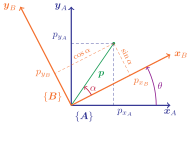
Rotación 2D
\[\tiny {}^{\textcolor{Orange}{\boldsymbol{B}}}{\textcolor{ForestGreen}{\boldsymbol{p}}} = %\begin{bmatrix} \textcolor{Orange}{p_{{x}_\boldsymbol{B}}} \\ \textcolor{Orange}{p_{{y}_\boldsymbol{B}}} \end{bmatrix} = \sideset{^\textcolor{Orange}{\boldsymbol{B}}}{}{\begin{bmatrix} \textcolor{ForestGreen}{p_{{x}}} \\[0.6em] \textcolor{ForestGreen}{p_{{y}}} \end{bmatrix}} = \begin{bmatrix} \colorbox{Gray}{$ |\textcolor{ForestGreen}{\boldsymbol{p}}| \cos{\textcolor{Maroon}{\alpha}} $} \\ \colorbox{white}{$ |\textcolor{ForestGreen}{\boldsymbol{p}}| \sin{\textcolor{Maroon}{\alpha}} $} \end{bmatrix} \]
\[\tiny {}^{\textcolor{Blue}{\boldsymbol{A}}}{\textcolor{ForestGreen}{\boldsymbol{p}}} = %\begin{bmatrix} \textcolor{Blue}{p_{{x}_\boldsymbol{A}}} \\ \textcolor{Blue}{p_{{y}_\boldsymbol{A}}} \end{bmatrix} = \sideset{^\textcolor{Blue}{\boldsymbol{A}}}{}{\begin{bmatrix} \textcolor{ForestGreen}{p_{{x}}} \\ \textcolor{ForestGreen}{p_{{y}}} \end{bmatrix}} = \begin{bmatrix} |\textcolor{ForestGreen}{\boldsymbol{p}}| \cos{(\textcolor{Maroon}{\alpha}+\textcolor{Plum}{\theta})} \\ |\textcolor{ForestGreen}{\boldsymbol{p}}| \sin{(\textcolor{Maroon}{\alpha}+\textcolor{Plum}{\theta})} \end{bmatrix} \]
Sabiendo:
- \(\sin{(A+B)} = \sin{A} \cos{B} + \cos{A} \sin{B}\)
- \(\cos{(A+B)} = \cos{A} \cos{B} - \sin{A} \sin{B}\)
\[\tiny \begin{align} %\begin{bmatrix} \textcolor{Blue}{p_{{x}_\boldsymbol{A}}} \\ \textcolor{Blue}{p_{{y}_\boldsymbol{A}}} \end{bmatrix} &= \sideset{^\textcolor{Blue}{\boldsymbol{A}}}{}{\begin{bmatrix} \textcolor{ForestGreen}{p_{{x}}} \\ \textcolor{ForestGreen}{p_{{y}}} \end{bmatrix}} &= \begin{bmatrix} |\textcolor{ForestGreen}{\boldsymbol{p}}| ( \cos{\textcolor{Maroon}{\alpha}} \cos{\textcolor{Plum}{\theta}} - \sin{\textcolor{Maroon}{\alpha}} \sin{\textcolor{Plum}{\theta}} ) \\ |\textcolor{ForestGreen}{\boldsymbol{p}}| ( \sin{\textcolor{Maroon}{\alpha}} \cos{\textcolor{Plum}{\theta}} + \cos{\textcolor{Maroon}{\alpha}} \sin{\textcolor{Plum}{\theta}} ) \end{bmatrix} \\ &= \begin{bmatrix} \colorbox{Gray}{$ |\textcolor{ForestGreen}{\boldsymbol{p}}| \cos{\textcolor{Maroon}{\alpha}} $} \cos{\textcolor{Plum}{\theta}} - \colorbox{white}{$ |\textcolor{ForestGreen}{\boldsymbol{p}}| \sin{\textcolor{Maroon}{\alpha}} $} \sin{\textcolor{Plum}{\theta}} \\ \colorbox{white}{$ |\textcolor{ForestGreen}{\boldsymbol{p}}| \sin{\textcolor{Maroon}{\alpha}} $} \cos{\textcolor{Plum}{\theta}} + \colorbox{Gray}{$ |\textcolor{ForestGreen}{\boldsymbol{p}}| \cos{\textcolor{Maroon}{\alpha}} $} \sin{\textcolor{Plum}{\theta}} \end{bmatrix} \end{align} \]
Rotación 2D
\[\tiny {}^{\textcolor{Orange}{\boldsymbol{B}}}{\textcolor{ForestGreen}{\boldsymbol{p}}} = %\begin{bmatrix} \textcolor{Orange}{p_{{x}_\boldsymbol{B}}} \\ \textcolor{Orange}{p_{{y}_\boldsymbol{B}}} \end{bmatrix} = \sideset{^\textcolor{Orange}{\boldsymbol{B}}}{}{\begin{bmatrix} \textcolor{ForestGreen}{p_{{x}}} \\[0.6em] \textcolor{ForestGreen}{p_{{y}}} \end{bmatrix}} = \begin{bmatrix} \colorbox{Gray}{$ |\textcolor{ForestGreen}{\boldsymbol{p}}| \cos{\textcolor{Maroon}{\alpha}} $} \\ \colorbox{lightgray}{$ |\textcolor{ForestGreen}{\boldsymbol{p}}| \sin{\textcolor{Maroon}{\alpha}} $} \end{bmatrix} \]
\[\tiny {}^{\textcolor{Blue}{\boldsymbol{A}}}{\textcolor{ForestGreen}{\boldsymbol{p}}} = %\begin{bmatrix} \textcolor{Blue}{p_{{x}_\boldsymbol{A}}} \\ \textcolor{Blue}{p_{{y}_\boldsymbol{A}}} \end{bmatrix} = \sideset{^\textcolor{Blue}{\boldsymbol{A}}}{}{\begin{bmatrix} \textcolor{ForestGreen}{p_{{x}}} \\ \textcolor{ForestGreen}{p_{{y}}} \end{bmatrix}} = \begin{bmatrix} |\textcolor{ForestGreen}{\boldsymbol{p}}| \cos{(\textcolor{Maroon}{\alpha}+\textcolor{Plum}{\theta})} \\ |\textcolor{ForestGreen}{\boldsymbol{p}}| \sin{(\textcolor{Maroon}{\alpha}+\textcolor{Plum}{\theta})} \end{bmatrix} \]
Sabiendo:
- \(\sin{(A+B)} = \sin{A} \cos{B} + \cos{A} \sin{B}\)
- \(\cos{(A+B)} = \cos{A} \cos{B} - \sin{A} \sin{B}\)
\[\tiny \begin{align} %\begin{bmatrix} \textcolor{Blue}{p_{{x}_\boldsymbol{A}}} \\ \textcolor{Blue}{p_{{y}_\boldsymbol{A}}} \end{bmatrix} &= \sideset{^\textcolor{Blue}{\boldsymbol{A}}}{}{\begin{bmatrix} \textcolor{ForestGreen}{p_{{x}}} \\ \textcolor{ForestGreen}{p_{{y}}} \end{bmatrix}} &= \begin{bmatrix} |\textcolor{ForestGreen}{\boldsymbol{p}}| ( \cos{\textcolor{Maroon}{\alpha}} \cos{\textcolor{Plum}{\theta}} - \sin{\textcolor{Maroon}{\alpha}} \sin{\textcolor{Plum}{\theta}} ) \\ |\textcolor{ForestGreen}{\boldsymbol{p}}| ( \sin{\textcolor{Maroon}{\alpha}} \cos{\textcolor{Plum}{\theta}} + \cos{\textcolor{Maroon}{\alpha}} \sin{\textcolor{Plum}{\theta}} ) \end{bmatrix} \\ &= \begin{bmatrix} \colorbox{Gray}{$ |\textcolor{ForestGreen}{\boldsymbol{p}}| \cos{\textcolor{Maroon}{\alpha}} $} \cos{\textcolor{Plum}{\theta}} - \colorbox{lightgray}{$ |\textcolor{ForestGreen}{\boldsymbol{p}}| \sin{\textcolor{Maroon}{\alpha}} $} \sin{\textcolor{Plum}{\theta}} \\ \colorbox{lightgray}{$ |\textcolor{ForestGreen}{\boldsymbol{p}}| \sin{\textcolor{Maroon}{\alpha}} $} \cos{\textcolor{Plum}{\theta}} + \colorbox{Gray}{$ |\textcolor{ForestGreen}{\boldsymbol{p}}| \cos{\textcolor{Maroon}{\alpha}} $} \sin{\textcolor{Plum}{\theta}} \end{bmatrix} \end{align} \]
Rotación 2D
\[\tiny {}^{\textcolor{Orange}{\boldsymbol{B}}}{\textcolor{ForestGreen}{\boldsymbol{p}}} = %\begin{bmatrix} \textcolor{Orange}{p_{{x}_\boldsymbol{B}}} \\ \textcolor{Orange}{p_{{y}_\boldsymbol{B}}} \end{bmatrix} = \sideset{^\textcolor{Orange}{\boldsymbol{B}}}{}{\begin{bmatrix} \textcolor{ForestGreen}{p_{{x}}} \\[0.6em] \textcolor{ForestGreen}{p_{{y}}} \end{bmatrix}} = \begin{bmatrix} \colorbox{Gray}{$ |\textcolor{ForestGreen}{\boldsymbol{p}}| \cos{\textcolor{Maroon}{\alpha}} $} \\ \colorbox{lightgray}{$ |\textcolor{ForestGreen}{\boldsymbol{p}}| \sin{\textcolor{Maroon}{\alpha}} $} \end{bmatrix} \]
\[\tiny {}^{\textcolor{Blue}{\boldsymbol{A}}}{\textcolor{ForestGreen}{\boldsymbol{p}}} = %\begin{bmatrix} \textcolor{Blue}{p_{{x}_\boldsymbol{A}}} \\ \textcolor{Blue}{p_{{y}_\boldsymbol{A}}} \end{bmatrix} = \sideset{^\textcolor{Blue}{\boldsymbol{A}}}{}{\begin{bmatrix} \textcolor{ForestGreen}{p_{{x}}} \\ \textcolor{ForestGreen}{p_{{y}}} \end{bmatrix}} = \begin{bmatrix} |\textcolor{ForestGreen}{\boldsymbol{p}}| \cos{(\textcolor{Maroon}{\alpha}+\textcolor{Plum}{\theta})} \\ |\textcolor{ForestGreen}{\boldsymbol{p}}| \sin{(\textcolor{Maroon}{\alpha}+\textcolor{Plum}{\theta})} \end{bmatrix} \]
Sabiendo:
- \(\sin{(A+B)} = \sin{A} \cos{B} + \cos{A} \sin{B}\)
- \(\cos{(A+B)} = \cos{A} \cos{B} - \sin{A} \sin{B}\)
\[\tiny \begin{align} %\begin{bmatrix} \textcolor{Blue}{p_{{x}_\boldsymbol{A}}} \\ \textcolor{Blue}{p_{{y}_\boldsymbol{A}}} \end{bmatrix} &= \sideset{^\textcolor{Blue}{\boldsymbol{A}}}{}{\begin{bmatrix} \textcolor{ForestGreen}{p_{{x}}} \\ \textcolor{ForestGreen}{p_{{y}}} \end{bmatrix}} &= \begin{bmatrix} |\textcolor{ForestGreen}{\boldsymbol{p}}| ( \cos{\textcolor{Maroon}{\alpha}} \cos{\textcolor{Plum}{\theta}} - \sin{\textcolor{Maroon}{\alpha}} \sin{\textcolor{Plum}{\theta}} ) \\ |\textcolor{ForestGreen}{\boldsymbol{p}}| ( \sin{\textcolor{Maroon}{\alpha}} \cos{\textcolor{Plum}{\theta}} + \cos{\textcolor{Maroon}{\alpha}} \sin{\textcolor{Plum}{\theta}} ) \end{bmatrix} \\ %&= \begin{bmatrix} \textcolor{Orange}{p_{{x}_\boldsymbol{B}}} \cos{\textcolor{Plum}{\theta}} - \textcolor{Orange}{p_{{y}_\boldsymbol{B}}} \sin{\textcolor{Plum}{\theta}} \\ \textcolor{Orange}{p_{{y}_\boldsymbol{B}}} \cos{\textcolor{Plum}{\theta}} + \textcolor{Orange}{p_{{x}_\boldsymbol{B}}} \sin{\textcolor{Plum}{\theta}} \end{bmatrix} &= \sideset{}{_\textcolor{Orange}{\boldsymbol{B}}}{\begin{bmatrix} \textcolor{ForestGreen}{p_{x}} \cos{\textcolor{Plum}{\theta}} - \textcolor{ForestGreen}{p_{y}} \sin{\textcolor{Plum}{\theta}} \\ \textcolor{ForestGreen}{p_{y}} \cos{\textcolor{Plum}{\theta}} + \textcolor{ForestGreen}{p_{x}} \sin{\textcolor{Plum}{\theta}} \end{bmatrix}} \end{align} \]
Rotación 2D
\[\tiny {}^{\textcolor{Orange}{\boldsymbol{B}}}{\textcolor{ForestGreen}{\boldsymbol{p}}} = %\begin{bmatrix} \textcolor{Orange}{p_{{x}_\boldsymbol{B}}} \\ \textcolor{Orange}{p_{{y}_\boldsymbol{B}}} \end{bmatrix} = \sideset{^\textcolor{Orange}{\boldsymbol{B}}}{}{\begin{bmatrix} \textcolor{ForestGreen}{p_{{x}}} \\[0.6em] \textcolor{ForestGreen}{p_{{y}}} \end{bmatrix}} = \begin{bmatrix} \colorbox{Gray}{$ |\textcolor{ForestGreen}{\boldsymbol{p}}| \cos{\textcolor{Maroon}{\alpha}} $} \\ \colorbox{lightgray}{$ |\textcolor{ForestGreen}{\boldsymbol{p}}| \sin{\textcolor{Maroon}{\alpha}} $} \end{bmatrix} \]
\[\tiny {}^{\textcolor{Blue}{\boldsymbol{A}}}{\textcolor{ForestGreen}{\boldsymbol{p}}} = %\begin{bmatrix} \textcolor{Blue}{p_{{x}_\boldsymbol{A}}} \\ \textcolor{Blue}{p_{{y}_\boldsymbol{A}}} \end{bmatrix} = \sideset{^\textcolor{Blue}{\boldsymbol{A}}}{}{\begin{bmatrix} \textcolor{ForestGreen}{p_{{x}}} \\ \textcolor{ForestGreen}{p_{{y}}} \end{bmatrix}} = \begin{bmatrix} |\textcolor{ForestGreen}{\boldsymbol{p}}| \cos{(\textcolor{Maroon}{\alpha}+\textcolor{Plum}{\theta})} \\ |\textcolor{ForestGreen}{\boldsymbol{p}}| \sin{(\textcolor{Maroon}{\alpha}+\textcolor{Plum}{\theta})} \end{bmatrix} \]
Sabiendo:
- \(\sin{(A+B)} = \sin{A} \cos{B} + \cos{A} \sin{B}\)
- \(\cos{(A+B)} = \cos{A} \cos{B} - \sin{A} \sin{B}\)
\[\tiny \begin{align} %\begin{bmatrix} \textcolor{Blue}{p_{{x}_\boldsymbol{A}}} \\ \textcolor{Blue}{p_{{y}_\boldsymbol{A}}} \end{bmatrix} &= \sideset{^\textcolor{Blue}{\boldsymbol{A}}}{}{\begin{bmatrix} \textcolor{ForestGreen}{p_{{x}}} \\ \textcolor{ForestGreen}{p_{{y}}} \end{bmatrix}} &= \begin{bmatrix} |\textcolor{ForestGreen}{\boldsymbol{p}}| ( \cos{\textcolor{Maroon}{\alpha}} \cos{\textcolor{Plum}{\theta}} - \sin{\textcolor{Maroon}{\alpha}} \sin{\textcolor{Plum}{\theta}} ) \\ |\textcolor{ForestGreen}{\boldsymbol{p}}| ( \sin{\textcolor{Maroon}{\alpha}} \cos{\textcolor{Plum}{\theta}} + \cos{\textcolor{Maroon}{\alpha}} \sin{\textcolor{Plum}{\theta}} ) \end{bmatrix} \\ %&= \begin{bmatrix} \textcolor{Orange}{p_{{x}_\boldsymbol{B}}} \cos{\textcolor{Plum}{\theta}} - \textcolor{Orange}{p_{{y}_\boldsymbol{B}}} \sin{\textcolor{Plum}{\theta}} \\ \textcolor{Orange}{p_{{y}_\boldsymbol{B}}} \cos{\textcolor{Plum}{\theta}} + \textcolor{Orange}{p_{{x}_\boldsymbol{B}}} \sin{\textcolor{Plum}{\theta}} \end{bmatrix} &= \sideset{}{_\textcolor{Orange}{\boldsymbol{B}}}{\begin{bmatrix} \textcolor{ForestGreen}{p_{x}} \cos{\textcolor{Plum}{\theta}} - \textcolor{ForestGreen}{p_{y}} \sin{\textcolor{Plum}{\theta}} \\ \textcolor{ForestGreen}{p_{y}} \cos{\textcolor{Plum}{\theta}} + \textcolor{ForestGreen}{p_{x}} \sin{\textcolor{Plum}{\theta}} \end{bmatrix}} = \sideset{^\textcolor{Blue}{\boldsymbol{A}}}{_\textcolor{Orange}{\boldsymbol{B}}}{\begin{bmatrix} \cos{\textcolor{Plum}{\theta}} & -\sin{\textcolor{Plum}{\theta}} \\ \sin{\textcolor{Plum}{\theta}} & \cos{\textcolor{Plum}{\theta}}\end{bmatrix}} \sideset{^\textcolor{Orange}{\boldsymbol{B}}}{}{\begin{bmatrix} \textcolor{ForestGreen}{p_{{x}}} \\ \textcolor{ForestGreen}{p_{{y}}} \end{bmatrix}} \end{align} \]
Rotación 2D
Expresado en forma matricial:
\[ \sideset{^\textcolor{Blue}{\boldsymbol{A}}}{}{\begin{bmatrix} \textcolor{ForestGreen}{p_{{x}}} \\ \textcolor{ForestGreen}{p_{{y}}} \end{bmatrix}} = \underbrace{\sideset{^\textcolor{Blue}{\boldsymbol{A}}}{_\textcolor{Orange}{\boldsymbol{B}}}{\begin{bmatrix} \cos{\textcolor{Plum}{\theta}} & -\sin{\textcolor{Plum}{\theta}} \\ \sin{\textcolor{Plum}{\theta}} & \cos{\textcolor{Plum}{\theta}} \end{bmatrix}}}_{\textsf{Matriz de rotacion} ~\boldsymbol{R}(\textcolor{Plum}{\theta}) } \sideset{^\textcolor{Orange}{\boldsymbol{B}}}{}{\begin{bmatrix} \textcolor{ForestGreen}{p_{{x}}} \\ \textcolor{ForestGreen}{p_{{y}}} \end{bmatrix}} \]
\[ {}^\textcolor{Blue}{\boldsymbol{A}}{\textcolor{ForestGreen}{\boldsymbol{p}}} = {}^\textcolor{Blue}{\boldsymbol{A}}\boldsymbol{T}_{\textcolor{Orange}{\boldsymbol{B}}} {}^{\textcolor{Orange}{\boldsymbol{B}}}{\textcolor{ForestGreen}{\boldsymbol{p}}} \to {}^\textcolor{Blue}{\boldsymbol{A}}{\textcolor{ForestGreen}{\boldsymbol{p}}} = \boldsymbol{R}(\textcolor{Plum}{\theta}) {}^{\textcolor{Orange}{\boldsymbol{B}}}{\textcolor{ForestGreen}{\boldsymbol{p}}} \]
donde: \[ {}^\textcolor{Blue}{\boldsymbol{A}}\boldsymbol{T}_{\textcolor{Orange}{\boldsymbol{B}}} = \boldsymbol{R}(\textcolor{Plum}{\theta}) = \begin{bmatrix} \cos{\textcolor{Plum}{\theta}} & -\sin{\textcolor{Plum}{\theta}} \\ \sin{\textcolor{Plum}{\theta}} & \cos{\textcolor{Plum}{\theta}}\end{bmatrix} \]
Matriz ortogonal y ortonormal:
\[ \boldsymbol{R}(\theta)^{-1} = \boldsymbol{R}(\theta)^{\top} \qquad \det{\boldsymbol{R}(\theta)} = 1 \]
Rotación 2D
Ejemplo numérico: rotación de \(30°\)
- Matriz de rotación:
\[ \boldsymbol{R}(\textcolor{Plum}{\theta}) = \begin{bmatrix} \cos{\textcolor{Plum}{\theta}} & -\sin{\textcolor{Plum}{\theta}} \\ \sin{\textcolor{Plum}{\theta}} & \cos{\textcolor{Plum}{\theta}} \end{bmatrix} = \begin{bmatrix} \cos{\textcolor{Plum}{30°}} & -\sin{\textcolor{Plum}{30°}} \\ \sin{\textcolor{Plum}{30°}} & \cos{\textcolor{Plum}{30°}} \end{bmatrix} \approx \begin{bmatrix} {0.866} & -{0.5} \\ {0.5} & {0.866} \end{bmatrix} \]
Rotación 2D
Ejemplo numérico: rotación de \(30°\)
- Matriz de rotación:
\[ \boldsymbol{R}(30°) \approx \begin{bmatrix} {0.866} & -{0.5} \\ {0.5} & {0.866} \end{bmatrix} \]
- Puntos: \((2, 0)\), \((2, 2)\), \((1, 3)\), \((0, 2)\), \((0, 0)\), \((2, 0)\)
- Primer punto: \((2, 0)\)
\[ \hat{p} = \boldsymbol{R}(30°) ~p = \begin{bmatrix} {0.866} & -{0.5} \\ {0.5} & {0.866} \end{bmatrix} \begin{bmatrix} 2 \\ 0 \end{bmatrix} \approx \begin{bmatrix} 1.73 \\ 1.0 \end{bmatrix} \]
Rotación 2D
Ejemplo numérico: rotación de \(30°\)
- Matriz de rotación:
\[ \boldsymbol{R}(30°) \approx \begin{bmatrix} {0.866} & -{0.5} \\ {0.5} & {0.866} \end{bmatrix} \]
- Puntos: \((2, 0)\), \((2, 2)\), \((1, 3)\), \((0, 2)\), \((0, 0)\), \((2, 0)\)
- Primer punto: \((2, 0)\)
\[ \hat{p} = \boldsymbol{R}(30°) ~p = \begin{bmatrix} {0.866} & -{0.5} \\ {0.5} & {0.866} \end{bmatrix} \begin{bmatrix} 2 \\ 0 \end{bmatrix} \approx \begin{bmatrix} 1.73 \\ 1.0 \end{bmatrix} \]
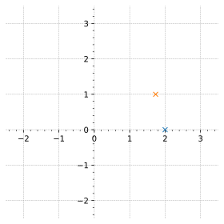
Rotación 2D
Ejemplo numérico: rotación de \(30°\)
- Matriz de rotación:
\[ \boldsymbol{R}(30°) \approx \begin{bmatrix} {0.866} & -{0.5} \\ {0.5} & {0.866} \end{bmatrix} \]
- Puntos: \((2, 0)\), \((2, 2)\), \((1, 3)\), \((0, 2)\), \((0, 0)\), \((2, 0)\)
- Segundo punto: \((2, 2)\)
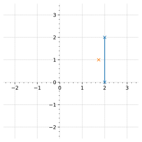
Rotación 2D
Ejemplo numérico: rotación de \(30°\)
- Matriz de rotación:
\[ \boldsymbol{R}(30°) \approx \begin{bmatrix} {0.866} & -{0.5} \\ {0.5} & {0.866} \end{bmatrix} \]
- Puntos: \((2, 0)\), \((2, 2)\), \((1, 3)\), \((0, 2)\), \((0, 0)\), \((2, 0)\)
- Segundo punto: \((2, 2)\)
\[ \hat{p} = \boldsymbol{R}(30°) ~p = \begin{bmatrix} {0.866} & -{0.5} \\ {0.5} & {0.866} \end{bmatrix} \begin{bmatrix} 2 \\ 2 \end{bmatrix} \approx \begin{bmatrix} 0.73 \\ 2.73 \end{bmatrix} \]
Rotación 2D
Ejemplo numérico: rotación de \(30°\)
- Matriz de rotación:
\[ \boldsymbol{R}(30°) \approx \begin{bmatrix} {0.866} & -{0.5} \\ {0.5} & {0.866} \end{bmatrix} \]
- Puntos: \((2, 0)\), \((2, 2)\), \((1, 3)\), \((0, 2)\), \((0, 0)\), \((2, 0)\)
- Segundo punto: \((2, 2)\)
\[ \hat{p} = \boldsymbol{R}(30°) ~p = \begin{bmatrix} {0.866} & -{0.5} \\ {0.5} & {0.866} \end{bmatrix} \begin{bmatrix} 2 \\ 2 \end{bmatrix} \approx \begin{bmatrix} 0.73 \\ 2.73 \end{bmatrix} \]
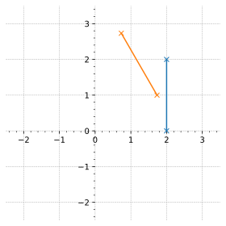
Rotación 2D
Ejemplo numérico: rotación de \(30°\)
- Matriz de rotación:
\[ \boldsymbol{R}(30°) \approx \begin{bmatrix} {0.866} & -{0.5} \\ {0.5} & {0.866} \end{bmatrix} \]
- Puntos: \((2, 0)\), \((2, 2)\), \((1, 3)\), \((0, 2)\), \((0, 0)\), \((2, 0)\)
- Puntos rotados: \((1.73, 1.0)\), \((0.73, 2.73)\), \((-0.63, 3.10)\), \((-1.0, 1.73)\), \((0, 0)\), \((1.73, 1.0)\)
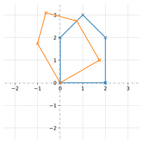
Traslación 2D
Dado un marco de referencia \(\textcolor{Orange}{\{\boldsymbol{B}\}}\) paralelo a un marco de referencia \(\textcolor{Blue}{\{\boldsymbol{A}\}}\) trasladado \(\textcolor{ForestGreen}{{}^\boldsymbol{A}{\boldsymbol{t}}_\boldsymbol{B}}\). Encontrar la matriz de transformación que convierte las coordenadas del marco \(\textcolor{Orange}{\boldsymbol{B}}\) al \(\textcolor{Blue}{\boldsymbol{A}}\).
\[ \textcolor{Blue}{{}^A{\boldsymbol{p}}} = \textcolor{ForestGreen}{{}^A\boldsymbol{t}_B} + \textcolor{Orange}{{}^B{\boldsymbol{p}}} \]
Puede representarse como una transformación lineal? \[ f(\boldsymbol{p}) = \boldsymbol{T} \, \boldsymbol{p} \]
No para un dimensión de \(n=2\)
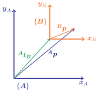
Coordenadas homogéneas
Que sucede si representamos un punto 2D con un vector de 3 componentes?
Dado un vector \({\boldsymbol{p}} = {\begin{bmatrix} a & b \end{bmatrix}}^{\top}\) su correspondiente homogéneo:
\[ {\boldsymbol{\tilde{p}}} = \begin{bmatrix} \tilde{a} \\ \tilde{b} \\ c \end{bmatrix} \quad \textsf{donde} \; \begin{cases} \tilde{a} = \tfrac{a}{c} \\ \tilde{b} = \tfrac{b}{c} \\ c \neq 0 \end{cases} \]
Con \(c = 1 \to {\boldsymbol{\tilde{p}}} = {\begin{bmatrix} a & b & 1 \end{bmatrix}}^{\top}\)
Para el problema de traslación 2D:
\[ \textcolor{Blue}{{}^\boldsymbol{A}{\boldsymbol{\tilde{p}}}} = \textcolor{ForestGreen}{{}^\boldsymbol{A}\boldsymbol{\tilde{t}}_\boldsymbol{B}} + \textcolor{Orange}{{}^\boldsymbol{B}{\boldsymbol{\tilde{p}}}} \to \begin{bmatrix} \textcolor{Blue}{p_{{x}_\boldsymbol{A}}} \\ \textcolor{Blue}{p_{{y}_\boldsymbol{A}}} \\ 1 \end{bmatrix} = {\begin{bmatrix} \textcolor{ForestGreen}{{t_x}} \\ \textcolor{ForestGreen}{{t_y}} \\ 0 \end{bmatrix}} + \begin{bmatrix} \textcolor{Orange}{p_{{x}_\boldsymbol{B}}} \\ \textcolor{Orange}{p_{{y}_\boldsymbol{B}}} \\ 1 \end{bmatrix} = \begin{bmatrix} \textcolor{ForestGreen}{{t_x}} + \textcolor{Orange}{p_{{x}_\boldsymbol{B}}} \\ \textcolor{ForestGreen}{{t_y}} + \textcolor{Orange}{p_{{y}_\boldsymbol{B}}} \\ 1 \end{bmatrix} \]
Traslación 2D en c.h.
El problema expresado en coordenadas homogéneas:
\[ \textcolor{Blue}{{}^\boldsymbol{A}{\boldsymbol{\tilde{p}}}} = \textcolor{Blue}{{}^\boldsymbol{A}}\boldsymbol{T}_\textcolor{Orange}{\boldsymbol{B}} \textcolor{Orange}{{}^\boldsymbol{B}{\boldsymbol{\tilde{p}}}} \] con \({}^A\boldsymbol{T}_B\) de dimension \(3 \times 3\)
\[ \begin{align} \textcolor{Blue}{{}^\boldsymbol{A}{\boldsymbol{\tilde{p}}}} &= {\begin{bmatrix} ? & ? & ? \\ ? & ? & ? \\ \colorbox{white}{?} & \colorbox{white}{?} & \colorbox{white}{?} \end{bmatrix}} \begin{bmatrix} \textcolor{Orange}{p_{{x}_\boldsymbol{B}}} \\ \textcolor{Orange}{p_{{y}_\boldsymbol{B}}} \\ {1} \end{bmatrix} = \begin{bmatrix} \textcolor{ForestGreen}{{t_x}} + \textcolor{Orange}{p_{{x}_\boldsymbol{B}}} \\ \textcolor{ForestGreen}{{t_y}} + \textcolor{Orange}{p_{{y}_\boldsymbol{B}}} \\ \colorbox{white}{1} \end{bmatrix} \end{align} \]
Traslación 2D en c.h.
El problema expresado en coordenadas homogéneas:
\[ \textcolor{Blue}{{}^\boldsymbol{A}{\boldsymbol{\tilde{p}}}} = \textcolor{Blue}{{}^\boldsymbol{A}}\boldsymbol{T}_\textcolor{Orange}{\boldsymbol{B}} \textcolor{Orange}{{}^\boldsymbol{B}{\boldsymbol{\tilde{p}}}} \] con \({}^A\boldsymbol{T}_B\) de dimension \(3 \times 3\)
\[ \begin{align} \textcolor{Blue}{{}^\boldsymbol{A}{\boldsymbol{\tilde{p}}}} &= {\begin{bmatrix} ? & ? & ? \\ ? & ? & ? \\ \colorbox{gray}{?} & \colorbox{gray}{?} & \colorbox{gray}{?} \end{bmatrix}} \begin{bmatrix} \textcolor{Orange}{p_{{x}_\boldsymbol{B}}} \\ \textcolor{Orange}{p_{{y}_\boldsymbol{B}}} \\ {1} \end{bmatrix} = \begin{bmatrix} \textcolor{ForestGreen}{{t_x}} + \textcolor{Orange}{p_{{x}_\boldsymbol{B}}} \\ \textcolor{ForestGreen}{{t_y}} + \textcolor{Orange}{p_{{y}_\boldsymbol{B}}} \\ \colorbox{gray}{1} \end{bmatrix} \end{align} \]
\[ \colorbox{gray}{?} \cdot \textcolor{Orange}{p_{{x}_\boldsymbol{B}}} + \colorbox{gray}{?} \cdot \textcolor{Orange}{p_{{y}_\boldsymbol{B}}} + \colorbox{gray}{?} \cdot {1} = \colorbox{gray}{1} \]
\[ \colorbox{white}{0} \cdot \textcolor{Orange}{p_{{x}_\boldsymbol{B}}} + \colorbox{white}{0} \cdot \textcolor{Orange}{p_{{y}_\boldsymbol{B}}} + \colorbox{white}{1} \cdot {1} = \colorbox{white}{1} \]
Traslación 2D en c.h.
El problema expresado en coordenadas homogéneas:
\[ \textcolor{Blue}{{}^\boldsymbol{A}{\boldsymbol{\tilde{p}}}} = \textcolor{Blue}{{}^\boldsymbol{A}}\boldsymbol{T}_\textcolor{Orange}{\boldsymbol{B}} \textcolor{Orange}{{}^\boldsymbol{B}{\boldsymbol{\tilde{p}}}} \] con \({}^A\boldsymbol{T}_B\) de dimension \(3 \times 3\)
\[ \begin{align} \textcolor{Blue}{{}^\boldsymbol{A}{\boldsymbol{\tilde{p}}}} &= {\begin{bmatrix} ? & ? & ? \\ ? & ? & ? \\ \colorbox{white}{0} & \colorbox{white}{0} & \colorbox{white}{1} \end{bmatrix}} \begin{bmatrix} \textcolor{Orange}{p_{{x}_\boldsymbol{B}}} \\ \textcolor{Orange}{p_{{y}_\boldsymbol{B}}} \\ {1} \end{bmatrix} = \begin{bmatrix} \textcolor{ForestGreen}{{t_x}} + \textcolor{Orange}{p_{{x}_\boldsymbol{B}}} \\ \textcolor{ForestGreen}{{t_y}} + \textcolor{Orange}{p_{{y}_\boldsymbol{B}}} \\ \colorbox{white}{1} \end{bmatrix} \end{align} \]
Traslación 2D en c.h.
El problema expresado en coordenadas homogéneas:
\[ \textcolor{Blue}{{}^\boldsymbol{A}{\boldsymbol{\tilde{p}}}} = \textcolor{Blue}{{}^\boldsymbol{A}}\boldsymbol{T}_\textcolor{Orange}{\boldsymbol{B}} \textcolor{Orange}{{}^\boldsymbol{B}{\boldsymbol{\tilde{p}}}} \] con \({}^A\boldsymbol{T}_B\) de dimension \(3 \times 3\)
\[ \begin{align} \textcolor{Blue}{{}^\boldsymbol{A}{\boldsymbol{\tilde{p}}}} &= {\begin{bmatrix} \colorbox{lightgray}{?} & \colorbox{lightgray}{?} & \colorbox{lightgray}{?} \\ ? & ? & ? \\ \colorbox{white}{0} & \colorbox{white}{0} & \colorbox{white}{1} \end{bmatrix}} \begin{bmatrix} \textcolor{Orange}{p_{{x}_\boldsymbol{B}}} \\ \textcolor{Orange}{p_{{y}_\boldsymbol{B}}} \\ {1} \end{bmatrix} = \begin{bmatrix} \colorbox{lightgray}{$\textcolor{ForestGreen}{{t_x}} + \textcolor{Orange}{p_{{x}_\boldsymbol{B}}}$} \\ \textcolor{ForestGreen}{{t_y}} + \textcolor{Orange}{p_{{y}_\boldsymbol{B}}} \\ \colorbox{white}{1} \end{bmatrix} \end{align} \]
\[ \colorbox{lightgray}{?} \cdot \textcolor{Orange}{p_{{x}_\boldsymbol{B}}} + \colorbox{lightgray}{?} \cdot \textcolor{Orange}{p_{{y}_\boldsymbol{B}}} + \colorbox{lightgray}{?} \cdot {1} = \colorbox{lightgray}{$\textcolor{ForestGreen}{{t_x}} + \textcolor{Orange}{p_{{x}_\boldsymbol{B}}}$} \]
\[ \colorbox{white}{1} \cdot \textcolor{Orange}{p_{{x}_\boldsymbol{B}}} + \colorbox{white}{0} \cdot \textcolor{Orange}{p_{{y}_\boldsymbol{B}}} + \colorbox{white}{$\textcolor{ForestGreen}{{t_x}}$} \cdot {1} = \colorbox{white}{$\textcolor{ForestGreen}{{t_x}} + \textcolor{Orange}{p_{{x}_\boldsymbol{B}}}$} \]
Traslación 2D en c.h.
El problema expresado en coordenadas homogéneas:
\[ \textcolor{Blue}{{}^\boldsymbol{A}{\boldsymbol{\tilde{p}}}} = \textcolor{Blue}{{}^\boldsymbol{A}}\boldsymbol{T}_\textcolor{Orange}{\boldsymbol{B}} \textcolor{Orange}{{}^\boldsymbol{B}{\boldsymbol{\tilde{p}}}} \] con \({}^A\boldsymbol{T}_B\) de dimension \(3 \times 3\)
\[ \begin{align} \textcolor{Blue}{{}^\boldsymbol{A}{\boldsymbol{\tilde{p}}}} &= {\begin{bmatrix} \colorbox{white}{1} & \colorbox{white}{0} & \colorbox{white}{$\textcolor{ForestGreen}{{t_x}}$} \\ ? & ? & ? \\ \colorbox{white}{0} & \colorbox{white}{0} & \colorbox{white}{1} \end{bmatrix}} \begin{bmatrix} \textcolor{Orange}{p_{{x}_\boldsymbol{B}}} \\ \textcolor{Orange}{p_{{y}_\boldsymbol{B}}} \\ {1} \end{bmatrix} = \begin{bmatrix} \colorbox{white}{$\textcolor{ForestGreen}{{t_x}} + \textcolor{Orange}{p_{{x}_\boldsymbol{B}}}$} \\ \textcolor{ForestGreen}{{t_y}} + \textcolor{Orange}{p_{{y}_\boldsymbol{B}}} \\ \colorbox{white}{1} \end{bmatrix} \end{align} \]
Traslación 2D en c.h.
El problema expresado en coordenadas homogéneas:
\[ \textcolor{Blue}{{}^\boldsymbol{A}{\boldsymbol{\tilde{p}}}} = \textcolor{Blue}{{}^\boldsymbol{A}}\boldsymbol{T}_\textcolor{Orange}{\boldsymbol{B}} \textcolor{Orange}{{}^\boldsymbol{B}{\boldsymbol{\tilde{p}}}} \] con \({}^A\boldsymbol{T}_B\) de dimension \(3 \times 3\)
\[ \begin{align} \textcolor{Blue}{{}^\boldsymbol{A}{\boldsymbol{\tilde{p}}}} &= {\begin{bmatrix} \colorbox{white}{1} & \colorbox{white}{0} & \colorbox{white}{$\textcolor{ForestGreen}{{t_x}}$} \\ \colorbox{lightgray}{?} & \colorbox{lightgray}{?} & \colorbox{lightgray}{?} \\ \colorbox{white}{0} & \colorbox{white}{0} & \colorbox{white}{1} \end{bmatrix}} \begin{bmatrix} \textcolor{Orange}{p_{{x}_\boldsymbol{B}}} \\ \textcolor{Orange}{p_{{y}_\boldsymbol{B}}} \\ {1} \end{bmatrix} = \begin{bmatrix} \textcolor{ForestGreen}{{t_x}} + \textcolor{Orange}{p_{{x}_\boldsymbol{B}}} \\ \colorbox{lightgray}{$\textcolor{ForestGreen}{{t_y}} + \textcolor{Orange}{p_{{y}_\boldsymbol{B}}}$} \\ \colorbox{white}{1} \end{bmatrix} \end{align} \]
\[ \colorbox{lightgray}{?} \cdot \textcolor{Orange}{p_{{x}_\boldsymbol{B}}} + \colorbox{lightgray}{?} \cdot \textcolor{Orange}{p_{{y}_\boldsymbol{B}}} + \colorbox{lightgray}{?} \cdot {1} = \colorbox{lightgray}{$\textcolor{ForestGreen}{{t_y}} + \textcolor{Orange}{p_{{y}_\boldsymbol{B}}}$} \]
\[ \colorbox{white}{0} \cdot \textcolor{Orange}{p_{{x}_\boldsymbol{B}}} + \colorbox{white}{1} \cdot \textcolor{Orange}{p_{{y}_\boldsymbol{B}}} + \colorbox{white}{$\textcolor{ForestGreen}{{t_y}}$} \cdot {1} = \colorbox{white}{$\textcolor{ForestGreen}{{t_y}} + \textcolor{Orange}{p_{{y}_\boldsymbol{B}}}$} \]
Traslación 2D en c.h.
El problema expresado en coordenadas homogéneas:
\[ \textcolor{Blue}{{}^\boldsymbol{A}{\boldsymbol{\tilde{p}}}} = \textcolor{Blue}{{}^\boldsymbol{A}}\boldsymbol{T}_\textcolor{Orange}{\boldsymbol{B}} \textcolor{Orange}{{}^\boldsymbol{B}{\boldsymbol{\tilde{p}}}} \] con \({}^A\boldsymbol{T}_B\) de dimension \(3 \times 3\)
\[ \begin{align} \textcolor{Blue}{{}^\boldsymbol{A}{\boldsymbol{\tilde{p}}}} &= \underbrace{{\begin{bmatrix} \colorbox{white}{1} & \colorbox{white}{0} & \colorbox{white}{$\textcolor{ForestGreen}{{t_x}}$} \\ \colorbox{white}{0} & \colorbox{white}{1} & \colorbox{white}{$\textcolor{ForestGreen}{{t_y}}$} \\ \colorbox{white}{0} & \colorbox{white}{0} & \colorbox{white}{1} \end{bmatrix}}}_{\textsf{Matriz de traslación} ~\textcolor{Blue}{{}^\boldsymbol{A}}\boldsymbol{T}_\textcolor{Orange}{\boldsymbol{B}} } \begin{bmatrix} \textcolor{Orange}{p_{{x}_\boldsymbol{B}}} \\ \textcolor{Orange}{p_{{y}_\boldsymbol{B}}} \\ {1} \end{bmatrix} = \begin{bmatrix} \textcolor{ForestGreen}{{t_x}} + \textcolor{Orange}{p_{{x}_\boldsymbol{B}}} \\ \colorbox{white}{$\textcolor{ForestGreen}{{t_y}} + \textcolor{Orange}{p_{{y}_\boldsymbol{B}}}$} \\ \colorbox{white}{1} \end{bmatrix} \end{align} \]
Traslación y rotación 2D
Traslación \(\to {}^\textcolor{Blue}{\boldsymbol{A}}{\boldsymbol{p}} = {}^\textcolor{Blue}{\boldsymbol{A}}\boldsymbol{t}_{\textcolor{ForestGreen}{\boldsymbol{C}}} + {}^\textcolor{ForestGreen}{\boldsymbol{C}}{\boldsymbol{p}}\)
Rotación \(\to {}^\textcolor{ForestGreen}{\boldsymbol{C}}{\boldsymbol{p}} = {}^\textcolor{ForestGreen}{\boldsymbol{C}}\boldsymbol{R}_\textcolor{Orange}{\boldsymbol{B}} {}^\textcolor{Orange}{\boldsymbol{B}}{\boldsymbol{p}}\)
- Reemplazando:
\[ {}^\textcolor{Blue}{\boldsymbol{A}}{\boldsymbol{p}} = {}^\textcolor{Blue}{\boldsymbol{A}}\boldsymbol{t}_{\textcolor{ForestGreen}{\boldsymbol{C}}} + {}^\textcolor{ForestGreen}{\boldsymbol{C}}\boldsymbol{R}_\textcolor{Orange}{\boldsymbol{B}} {}^\textcolor{Orange}{\boldsymbol{B}}{\boldsymbol{p}} \]
- y dado que \(\textcolor{ForestGreen}{\boldsymbol{\{C\}}} \parallel \textcolor{Blue}{\boldsymbol{\{A\}}}\) y \(\textcolor{Orange}{\boldsymbol{B}} \equiv \textcolor{ForestGreen}{\boldsymbol{C}}\):
\[ {}^\textcolor{Blue}{\boldsymbol{A}}{\boldsymbol{p}} = {}^\textcolor{Blue}{\boldsymbol{A}}\boldsymbol{t}_{\textcolor{Orange}{\boldsymbol{B}}} + {}^\textcolor{Blue}{\boldsymbol{A}}\boldsymbol{R}_\textcolor{Orange}{\boldsymbol{B}} {}^\textcolor{Orange}{\boldsymbol{B}}{\boldsymbol{p}} \]
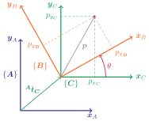
Traslación y rotación 2D
\[ {}^\textcolor{Blue}{\boldsymbol{A}}{\boldsymbol{p}} = {}^\textcolor{Blue}{\boldsymbol{A}}\boldsymbol{R}_\textcolor{Orange}{\boldsymbol{B}} {}^\textcolor{Orange}{\boldsymbol{B}}{\boldsymbol{p}} + {}^\textcolor{Blue}{\boldsymbol{A}}\boldsymbol{t}_{\textcolor{Orange}{\boldsymbol{B}}} \]
\[ \begin{bmatrix} \textcolor{Blue}{p_{{x}_\boldsymbol{A}}} \\ \textcolor{Blue}{p_{{y}_\boldsymbol{A}}} \end{bmatrix} = {\begin{bmatrix} \cos{\theta} & -\sin{\theta} \\ \sin{\theta} & \cos{\theta} \end{bmatrix}} \begin{bmatrix} \textcolor{Orange}{p_{{x}_\boldsymbol{B}}} \\ \textcolor{Orange}{p_{{y}_\boldsymbol{B}}} \end{bmatrix} + \begin{bmatrix} \textcolor{ForestGreen}{{t_x}} \\ \textcolor{ForestGreen}{{t_y}} \end{bmatrix} \]
En coordenadas homogéneas:
\[ \begin{bmatrix} \textcolor{Blue}{p_{{x}_\boldsymbol{A}}} \\ \textcolor{Blue}{p_{{y}_\boldsymbol{A}}} \\ 1 \end{bmatrix} = \left[ \begin{array}{cc|c} \cos{\theta} & -\sin{\theta} & \textcolor{ForestGreen}{{t_x}} \\ \sin{\theta} & \cos{\theta} & \textcolor{ForestGreen}{{t_y}} \\ \hline 0 & 0 & 1 \end{array} \right] %{\begin{bmatrix} \cos{\theta} & -\sin{\theta} & \textcolor{ForestGreen}{{t_x}} \\ \sin{\theta} & \cos{\theta} & \textcolor{ForestGreen}{{t_y}} \\ 0 & 0 & 1 \end{bmatrix}} \begin{bmatrix} \textcolor{Orange}{p_{{x}_\boldsymbol{B}}} \\ \textcolor{Orange}{p_{{y}_\boldsymbol{B}}} \\ 1 \end{bmatrix} \]
\[ \begin{bmatrix} \textcolor{Blue}{p_{{x}_\boldsymbol{A}}} \\ \textcolor{Blue}{p_{{y}_\boldsymbol{A}}} \\ 1 \end{bmatrix} = \left[ \begin{array}{c|c} \begin{array}{c} {}^\textcolor{Blue}{\boldsymbol{A}}\boldsymbol{R}_\textcolor{Orange}{\boldsymbol{B}} \end{array} & \begin{array}{c} {}^\textcolor{Blue}{\boldsymbol{A}}\boldsymbol{t}_{\textcolor{Orange}{\boldsymbol{B}}} \end{array} \\ \hline \begin{array}{c} 0 & 0 \end{array} & 1 \end{array} \right] %{\begin{bmatrix} \cos{\theta} & -\sin{\theta} & \textcolor{ForestGreen}{{t_x}} \\ \sin{\theta} & \cos{\theta} & \textcolor{ForestGreen}{{t_y}} \\ 0 & 0 & 1 \end{bmatrix}} \begin{bmatrix} \textcolor{Orange}{p_{{x}_\boldsymbol{B}}} \\ \textcolor{Orange}{p_{{y}_\boldsymbol{B}}} \\ 1 \end{bmatrix} \]
Transformación homogénea 2D
\[ {}^\textcolor{Blue}{\boldsymbol{A}}{\textcolor{Gray}{\boldsymbol{\tilde{p}}}} = \begin{bmatrix} {}^\textcolor{Blue}{\boldsymbol{A}}\boldsymbol{R}_\textcolor{Orange}{\boldsymbol{B}} & {}^\textcolor{Blue}{\boldsymbol{A}}\boldsymbol{t}_{\textcolor{Orange}{\boldsymbol{B}}} \\ \boldsymbol{0} & 1 \end{bmatrix} {}^{\textcolor{Orange}{\boldsymbol{B}}}{\textcolor{Gray}{\boldsymbol{\tilde{p}}}} \]
\[ {}^\textcolor{Blue}{\boldsymbol{A}}{\textcolor{Gray}{\boldsymbol{\tilde{p}}}} = {}^\textcolor{Blue}{\boldsymbol{A}}\boldsymbol{T}_\textcolor{Orange}{\boldsymbol{B}} {}^{\textcolor{Orange}{\boldsymbol{B}}}{\textcolor{Gray}{\boldsymbol{\tilde{p}}}} \]
donde \[ {}^\textcolor{Blue}{\boldsymbol{A}}\boldsymbol{T}_\textcolor{Orange}{\boldsymbol{B}} = \begin{bmatrix} {}^\textcolor{Blue}{\boldsymbol{A}}\boldsymbol{R}_\textcolor{Orange}{\boldsymbol{B}} & {}^\textcolor{Blue}{\boldsymbol{A}}\boldsymbol{t}_{\textcolor{Orange}{\boldsymbol{B}}} \\ \boldsymbol{0} & 1 \end{bmatrix} \]
describe una pose relativa como una matriz de \(3\times3\)
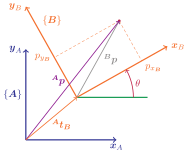
Generalizando
La estructura de \(\boldsymbol{T}\) se puede generalizar para \(n\)-dimensiones:
\[ \boldsymbol{T} ~\boldsymbol{\hat{p}} = \begin{bmatrix} \boldsymbol{R}_{n \times n} & \boldsymbol{t}_{n \times 1} \\ \boldsymbol{0}_{1 \times n} & 1 \end{bmatrix}_{(n+1) \times (n+1)} \boldsymbol{{p}}_{(n+1)} \]
En resumen: a partir de la función no lineal de traslación-rotación, se desarrolló una función lineal en el sistema de coordenadas homogéneo \(\boldsymbol{\tilde{p}}\) \[ \begin{align*} f(\boldsymbol{p}) &= \boldsymbol{R} ~\boldsymbol{p} + \boldsymbol{t} \\ &\downarrow \\ g(\boldsymbol{\tilde{p}}) &= \boldsymbol{T} \boldsymbol{\tilde{p}} = \begin{bmatrix} {}^A\boldsymbol{R}_B & {}^A\boldsymbol{t}_B \\ \boldsymbol{0} & 1 \end{bmatrix} \tilde{p} \end{align*} \]
Volviendo al mundo real
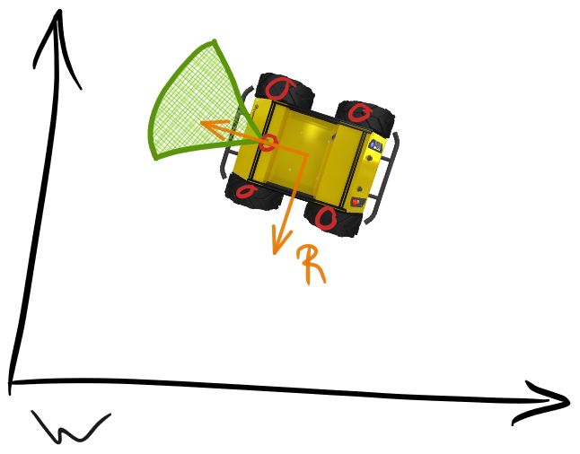
Volviendo al mundo real
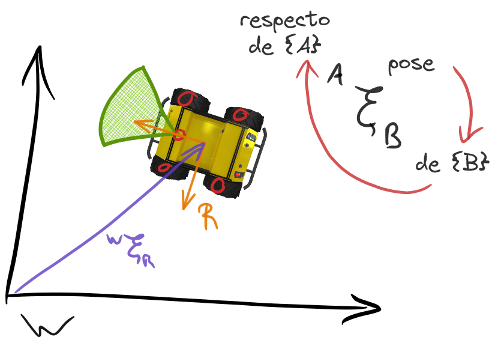
Pose 2D
Tres componentes: posición 2D y orientación \((x, y, \theta)\)
\[ {}^\textcolor{black}{\boldsymbol{W}} \textcolor{Purple}{\boldsymbol{\xi}}_\textcolor{Orange}{\boldsymbol{R}} \triangleq {}^\textcolor{black}{\boldsymbol{W}} \textcolor{black}{\boldsymbol{T}}_\textcolor{Orange}{\boldsymbol{R}} = \begin{bmatrix} \cos{\theta} & -\sin{\theta} & {}^\textcolor{black}{\boldsymbol{W}} \textcolor{black}{t_x} \\ \sin{\theta} & \cos{\theta} & {}^\textcolor{black}{\boldsymbol{W}} \textcolor{black}{t_x} \\ 0 & 0 & 1 \end{bmatrix} \]
\[ {}^\textcolor{black}{\boldsymbol{W}} \textcolor{LimeGreen}{\boldsymbol{\tilde{p}}}_\textcolor{PineGreen}{d} = {}^\textcolor{black}{\boldsymbol{W}} \textcolor{Purple}{\boldsymbol{\xi}}_\textcolor{Orange}{\boldsymbol{R}} {}^\textcolor{Orange}{\boldsymbol{R}} \textcolor{LimeGreen}{\boldsymbol{\tilde{p}}}_\textcolor{PineGreen}{d} \]
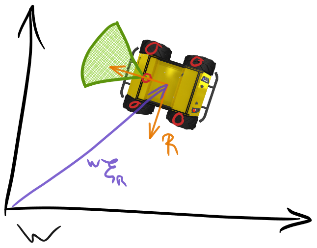
- Se puede considerar como un movimiento de traslación y rotación del marco de coordenadas
- La pose de un marco de coordenada es siempre respecto a otro
Pose 2D
Y si queremos ir del marco \(\{ \textcolor{Blue}{\boldsymbol{A}} \}\) al \(\{ \textcolor{Orange}{\boldsymbol{B}} \}\)?
La operación inversa
\[ {{}^\textcolor{Blue}{\boldsymbol{A}} \boldsymbol{\xi}_\textcolor{Orange}{\boldsymbol{B}} }^{-1} = {}^\textcolor{Orange}{\boldsymbol{B}} \boldsymbol{\xi}_\textcolor{Blue}{\boldsymbol{A}} \to {}^\textcolor{Orange}{\boldsymbol{B}} \boldsymbol{T}_\textcolor{Blue}{\boldsymbol{A}} = {{}^\textcolor{Blue}{\boldsymbol{A}} \boldsymbol{T}_\textcolor{Orange}{\boldsymbol{B}} }^{-1} \]
- Dada la forma particular de \(\boldsymbol{T}\) es posible calcular su inversa mediante:
\[ \boldsymbol{\xi}^{-1} = \begin{pmatrix} \boldsymbol{R} & \boldsymbol{t} \\ \boldsymbol{0} & 1 \end{pmatrix}^{-1} = \begin{pmatrix} \boldsymbol{R}^{\top} & -\boldsymbol{R}^{\top} \boldsymbol{t} \\ \boldsymbol{0} & 1 \end{pmatrix} \]
Composición de poses
\[ {}^\textcolor{Blue}{\boldsymbol{A}} \boldsymbol{\xi}_\textcolor{ForestGreen}{\boldsymbol{C}} = {}^\textcolor{Blue}{\boldsymbol{A}} \boldsymbol{\xi}_\textcolor{Maroon}{\boldsymbol{B}} \otimes {}^\textcolor{Maroon}{\boldsymbol{B}} \boldsymbol{\xi}_\textcolor{ForestGreen}{\boldsymbol{C}} \]
Se puede cacular como: \[ {}^\textcolor{Blue}{\boldsymbol{A}} \boldsymbol{\xi}_\textcolor{Maroon}{\boldsymbol{B}} \otimes {}^\textcolor{Maroon}{\boldsymbol{B}} \boldsymbol{\xi}_\textcolor{ForestGreen}{\boldsymbol{C}} = {}^\textcolor{Blue}{\boldsymbol{A}} \boldsymbol{T}_\textcolor{Maroon}{\boldsymbol{B}} {}^\textcolor{Maroon}{\boldsymbol{B}} \boldsymbol{T}_\textcolor{ForestGreen}{\boldsymbol{C}} \]
- Dada la forma particular de \(\boldsymbol{T}\), el producto se puede obtener mediante:
\[ \begin{align} \boldsymbol{\xi}_1 \otimes \boldsymbol{\xi}_2 &= \begin{pmatrix} \boldsymbol{R}_1 & \boldsymbol{t}_1 \\ \boldsymbol{0} & 1 \end{pmatrix} \begin{pmatrix} \boldsymbol{R}_2 & \boldsymbol{t}_2 \\ \boldsymbol{0} & 1 \end{pmatrix} \\[0.5em] &= \begin{pmatrix} \boldsymbol{R}_1 \boldsymbol{R}_2 & \boldsymbol{t}_1 + \boldsymbol{R}_1 \boldsymbol{t}_2 \\ \boldsymbol{0} & 1 \end{pmatrix} \end{align} \]
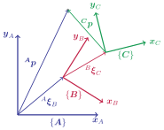
Transformaciones en ROS2
Convenciones (REP)
REP 103 “Standard Units of Measure and Coordinate Conventions”
- Unidades en S.I. (metro, segundo, kg, radian)
Transformaciones en ROS2
Convenciones (REP)
REP 103 “Standard Units of Measure and Coordinate Conventions”
- Unidades en S.I. (metro, segundo, kg, radian)
- Regla de la mano derecha

Transformaciones en ROS2
Convenciones (REP)
REP 103 “Standard Units of Measure and Coordinate Conventions”
- Unidades en S.I. (metro, segundo, kg, radian)
- Regla de la mano derecha
- Marcos de referencia:
ENU: Este - Norte - Arriba

Transformaciones en ROS2
Convenciones (REP)
REP 103 “Standard Units of Measure and Coordinate Conventions”
- Unidades en S.I. (metro, segundo, kg, radian)
- Regla de la mano derecha
- Marcos de referencia:
ENU: Este - Norte - ArribaNED: Norte - Este - Abajo

Transformaciones en ROS2
Convenciones (REP)
REP 103 “Standard Units of Measure and Coordinate Conventions”
- Unidades en S.I. (metro, segundo, kg, radian)
- Regla de la mano derecha
- Marcos de referencia:
ENU: Este - Norte - ArribaNED: Norte - Este - Abajo
- Roll (X), Pitch (Y) y Yaw (Z)
Transformaciones en ROS2
Convenciones (REP)
REP 105 “Coordinate Frames for Mobile Platforms”
- Convención de nombres
- Marco de coordenadas para plataformas robóticas
base_link: Fijo al robot (según REP103)odom: Fijo al mundomap: Fijo al mundo
--- displayMode: compact config: theme: forest htmlLabels: false --- flowchart TD %% A((earth)) %% B((map)) %% C((odom)) %% D((base_link)) A[earth] B[map] C[odom] D[base_link] A --> B --> C --> D
Representación de rotaciones 3D
ROS2 utiliza el espacio tridimensional (terrestre, aéreo, acuático)
Problemas con las matrices:
- En 3 dimensiones son 9 elementos (\(3 \times 3\))
\[ \begin{align} R &= R_x(\gamma)\, R_y(\beta)\, R_z(\alpha) \\ &= \begin{bmatrix} \cos \beta \cos \gamma & \sin \alpha \sin \beta \cos \gamma - \cos \alpha \sin \gamma & \cos \alpha \sin \beta \cos \gamma + \sin \alpha \sin \gamma \\ \cos \beta \sin \gamma & \sin \alpha \sin \beta \sin \gamma + \cos \alpha \cos \gamma & \cos \alpha \sin \beta \sin \gamma - \sin \alpha \cos \gamma \\ -\sin \beta & \sin \alpha \cos \beta & \cos \alpha \cos \beta \end{bmatrix} \end{align} \]
Representación de rotaciones 3D
ROS2 utiliza el espacio tridimensional (terrestre, aéreo, acuático)
Problemas con las matrices:
- En 3 dimensiones son 9 elementos (\(3 \times 3\))
- Difícil de interpolar
- Acumulan errores (pueden perder ortogonalidad)
- Gimbal lock

Representación de rotaciones 3D
Cuaterniones: Representación más compacta y robusta
\[ \boldsymbol{q} = \begin{bmatrix} q_w & q_x & q_y & q_z \end{bmatrix}^{\top} \]
- Las poses ahora se componen de una traslación \(\boldsymbol t = \begin{bmatrix} x & y & z \end{bmatrix}^{\top}\) y una orientación \(\boldsymbol{q}\)
- El cuaternion de la rotación en el plano \(X\,Y\) con ángulo \(\theta\) se define como:
\[ \boldsymbol{q} = \begin{bmatrix} q_w \\ q_x \\ q_y \\ q_z\end{bmatrix} = \begin{bmatrix} \cos{\tfrac{\theta}{2}} \\ 0 \\ 0 \\ \sin{\tfrac{\theta}{2}} \end{bmatrix} \]
tf2: Librería de transformaciones
- Marco de coordenadas y sus transformaciones en el tiempo
- Estructura de árbol (no existen bucles)
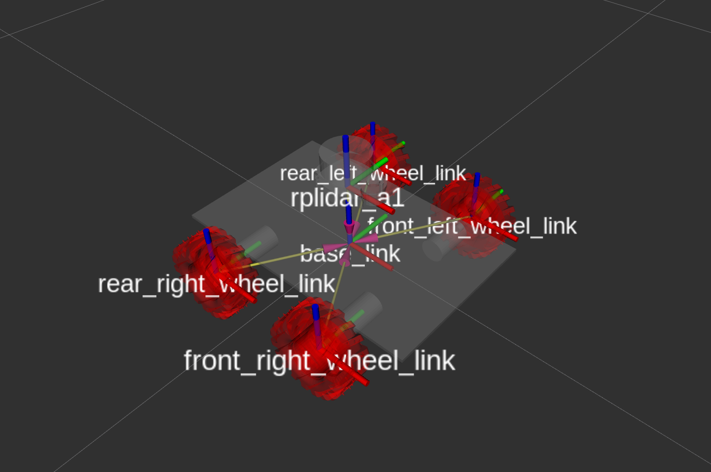
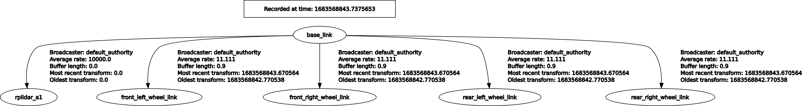
tf2: Librería de transformaciones
- Basado en topics y mensajes
tf2_msgs/msg/TFMessage
geometry_msgs/TransformStamped
├── std_msgs/Header header
├── string child_frame_id
└── geometry_msgs/Transform transform
├── geometry_msgs/Vector3 translation ⬅️
└── geometry_msgs/Quaternion rotation ⬅️- No se utilizan publishers/subscribers \(\to\) la librería
tf2_ros
ROS representa orientaciones como cuaterniones en todos los mensajes de pose y transformaciones
tf2: Librería de transformaciones
- 2 Tipos de transformaciones: estáticas y dinámicas

Transformaciones estáticas
static_transform_publisher: crear transformaciones estáticas manualmente
Parámetros:
- Traslación:
--x <X>,--y <Y>,--z <Z> - Rotación: (2 opciones)
- Ángulos:
--roll ROLL,--pitch PITCH,--yaw YAW - Cuaternion:
--qx <QX>,--qy <QY>,--qz <QZ>,--qw <QW>
- Ángulos:
- Marco de referencia (padre):
--frame-id <nombre_marco_referencia_padre> - Marco objetivo (hijo):
--child-frame-id <nombre_marco_referencia_hijo>
- Traslación:
Si no se completa traslación y rotación, se publica la transformación identidad
Publicar transformaciones
Librería
tf2_rosy mensajeTransformStamped
- Mediante el objeto
TransformBroadcasterse podrán publicar las transformaciones
Publicar transformaciones
Publicar transformaciones
def send_tf(self):
# Cálculo de los elementos de transformación
# Transformación => Traslación + Rotación
# ..
tf = TransformStamped()
tf.header.stamp = self.get_clock().now().to_msg()
# Marco de referencia (padre)
tf.header.frame_id = '<marco_referencia'
# Marco objetivo (hijo)
tf.child_frame_id = '<marco_referencia_objetivo>'
# Traslación
tf.transform.translation.x = t_x # Valores calculados
tf.transform.translation.y = t_y
tf.transform.translation.z = t_z
# Rotación
tf.transform.rotation.x = q[1] # Valores calculados
tf.transform.rotation.y = q[2]
tf.transform.rotation.z = q[3]
tf.transform.rotation.w = q[0]
# Enviar la transformación
self.tf_broadcaster.sendTransform(tf)Herramientas de visualización
Laboratorio
Transformaciones 2D y tf2